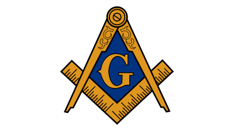

Ne každému se poštěstí být při stavbě národního divadla nebo “tančícího” domu.
Ale každý stavebník může říci, že jeho práce přetrvává minimálně po dlouhá desetiletí,
někdy i po staletí. Profese zedníka je z těch povolání,
za kterými je vidět výsledek práce.
Podle svého účelu dobře provedená stavba účelně slouží lidem, poskytuje jim obydlí, možnosti zábavy, vzdělání, sportu.
Můžeš stavět rodinné domy, velké stavby,
renovovat historické budovy. Můžeš zdít hrubou stavbu,
můžeš být specialistou na obklady a dlažby či na jiné součásti objektů. Můžeš pracovat ve stavební firmě nebo můžeš být živnostníkem.
Zednické řemeslo ti dá řadu možností pro dobré uplatnění.
